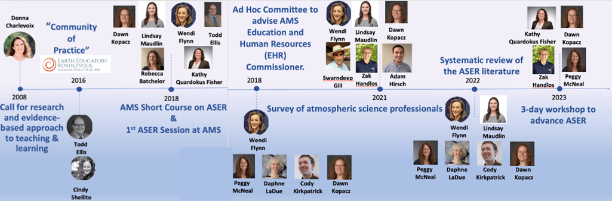

Research Projects › ASER
A community of atmospheric science educators and education researchers working to improve teaching and learning in the atmospheric sciences.
The Atmospheric Science Education Research (ASER) community formed in the summer of 2016, when a working group of atmospheric science educators and education researchers convened to build a discipline-based education research (DBER) community in atmospheric science. As a community, we work together to strengthen teaching and learning across the field.
Based upon work supported by the National Science Foundation under Grant Number AGS-2224006. Any opinions, findings, and conclusions or recommendations expressed in this material are those of the author(s) and do not necessarily reflect the views of the National Science Foundation.
Selected ASER History
